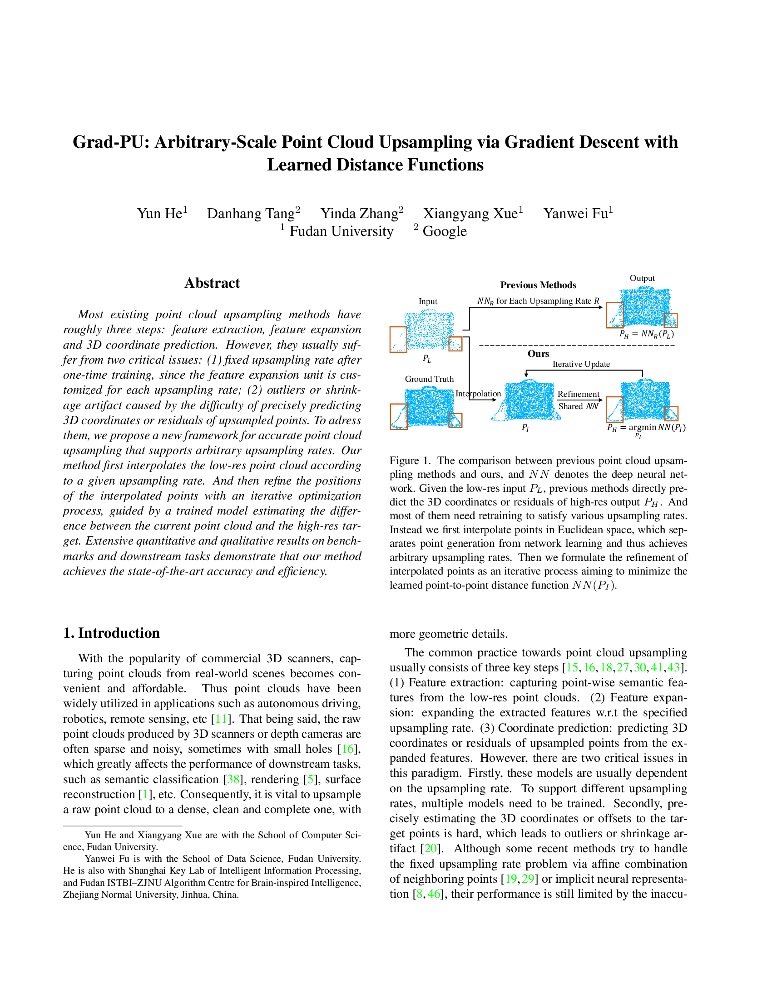

Qualitative comparisons with SOTA.
|
1Fudan University 2Google
|
|
Our method first interpolates the low-res point cloud according
to a given upsampling rate. And then refine the positions of the interpolated points with an
iterative optimization process, guided by a trained model estimating the difference between
the current point cloud and the high-res target.
|
Most existing point cloud upsampling methods have roughly three steps: feature extraction, feature expansion and 3D coordinate prediction. However, they usually suffer from two critical issues: (1) fixed upsampling rate after one-time training, since the feature expansion unit is customized for each upsampling rate; (2) outliers or shrinkage artifact caused by the difficulty of precisely predicting 3D coordinates or residuals of upsampled points. To adress them, we propose a new framework for accurate point cloud upsampling that supports arbitrary upsampling rates. Our method first interpolates the low-res point cloud according to a given upsampling rate. And then refine the positions of the interpolated points with an iterative optimization process, guided by a trained model estimating the difference between the current point cloud and the high-res target. Extensive quantitative and qualitative results on benchmarks and downstream tasks demonstrate that our method achieves the state-of-the-art accuracy and efficiency.
Video |
|  |
Y. He, D. Tang, Y. Zhang, X. Xue, Y. Fu
Grad-PU: Arbitrary-Scale Point Cloud Upsampling via Gradient Descent with Learned Distance Functions CVPR 2023 [arXiv] [GitHub] |
|
Qualitative comparisons with SOTA.
|
Acknowledgements
This work was supported in part by NSFC Project (62176061) and STCSM Project (No.22511105000).
Danhang Tang, Yinda Zhang and Xiangyang Xue are the corresponding authours.
The website is modified from this template.
|